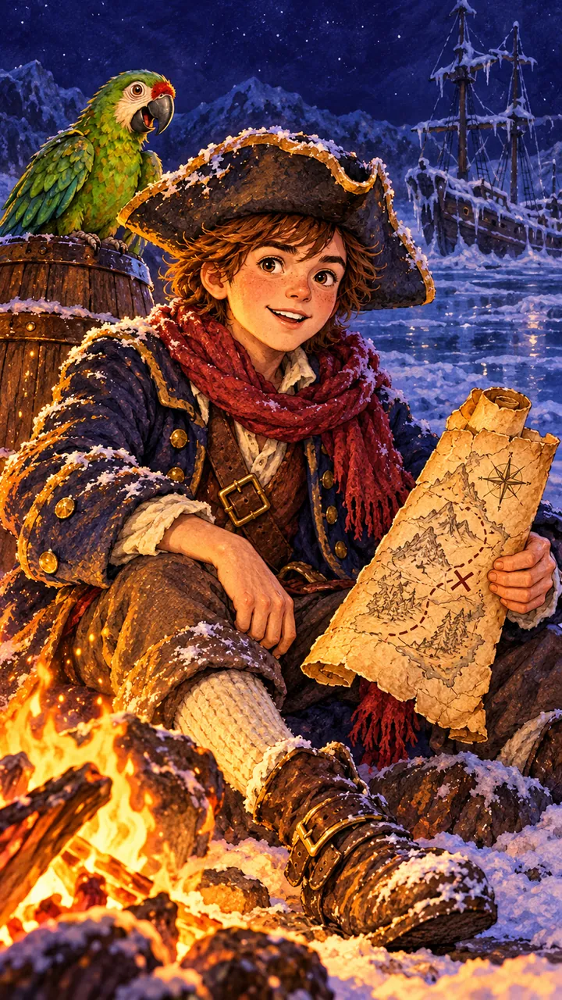
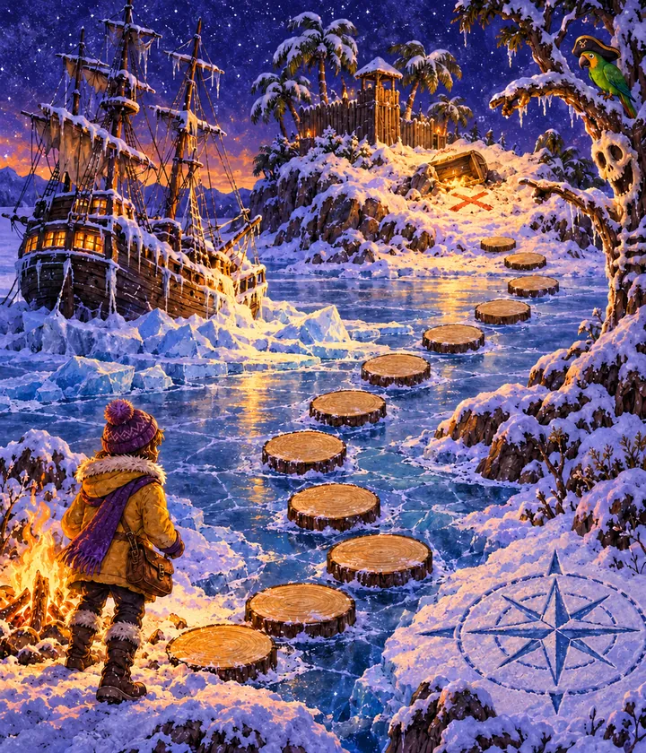
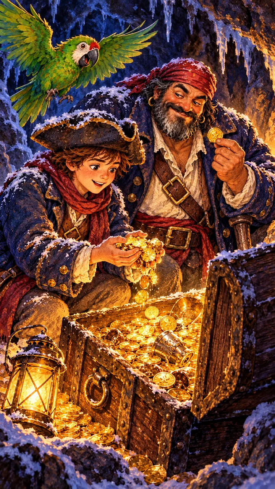
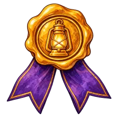

Story seven. Who is playing tonight?
История 7. Выберите уровень ребёнка.

История 7 · Jim Hawkins
Listen! Somebody is singing a sea song on the ice…
Включите звук
Jim Hawkins
Джим: «Мой корабль вмёрз в озеро, а карта сокровищ зашифрована. Мыши утащили страницы моей книги! Нужен смелый матрос. Поможешь?»


На льду спрятаны шесть замёрзших страниц. Прыгай по пенькам — бросай кубик!


Jim HawkinsBravery · «Pieces of eight!»
История 7 пройдена
Шесть страниц книги Джима оттаяли. Карточка Джима и значок «Храбрость» уже на полке.
- Listening, Vocabulary, Grammar
- Reading, Writing, Speaking
- Битва за значок
Под золотом в сундуке лежал ещё один кусок старой карты. Мыши что-то собирают… Завтра к костру придёт Пиноккио.